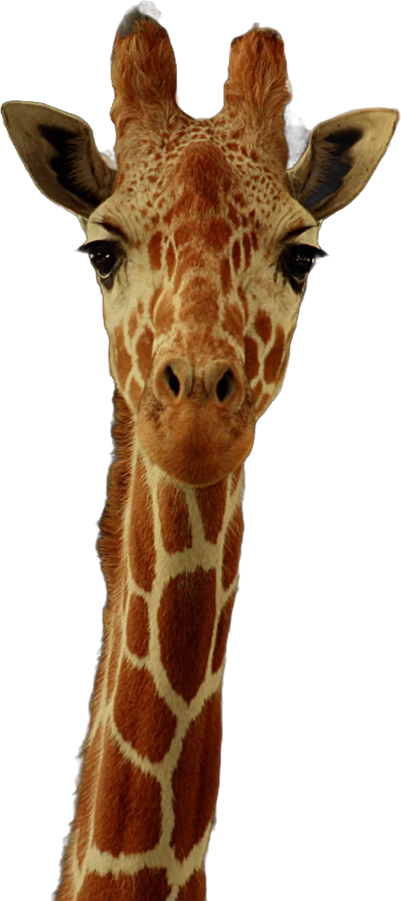
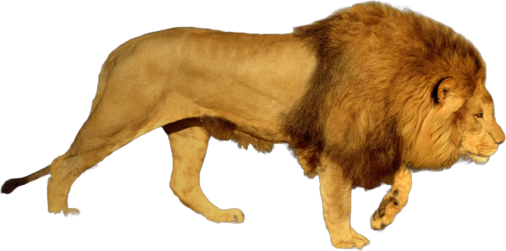
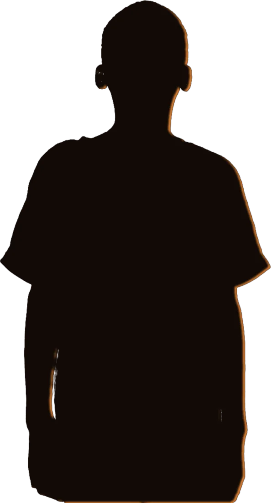
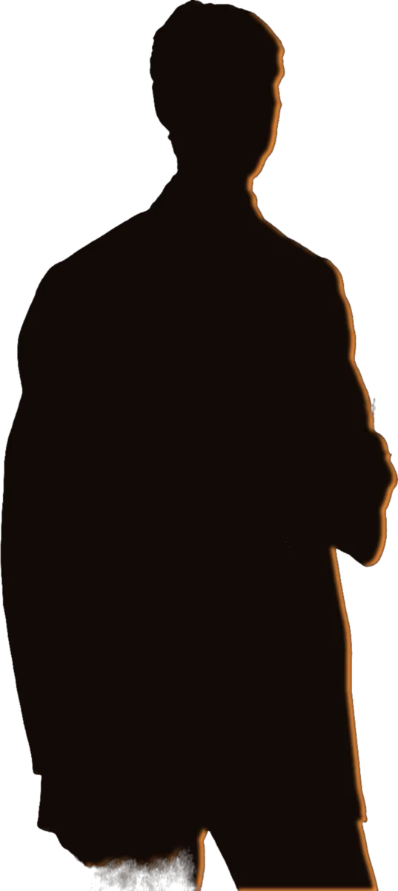
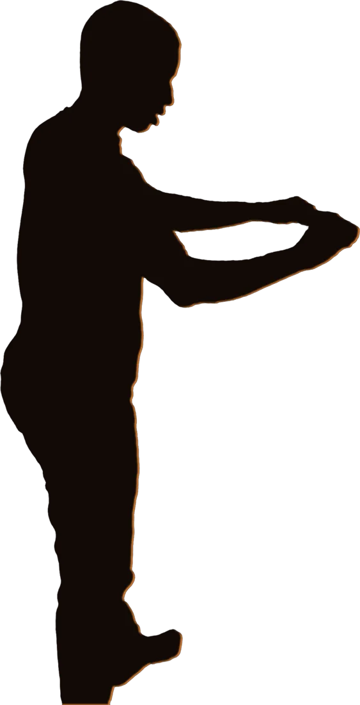
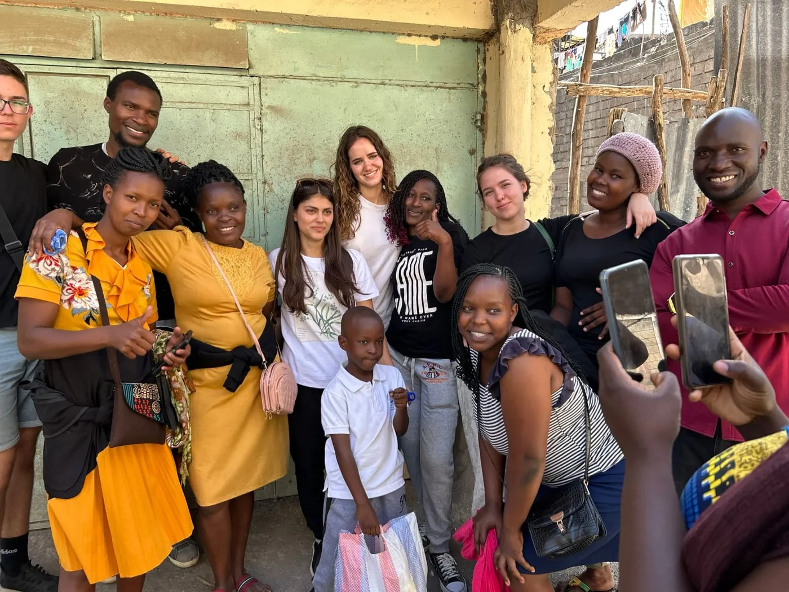

Clasa a XII-a · Liceul Internațional Integritas
Africa pe care n-o arată documentarele
Anul acesta, clasa a XII-a pleacă o lună la Kusekwa, în Tanzania, la 6.737 km de casă. Lăsăm acolo o biserică și un dispensar. Derulează: povestea durează un minut.

Leul e partea frumoasă a poveștii.
Pe el îl filmează toată lumea. Restul se aude mai greu, așa că am coborât din mașină.


„Mamă, mi-e foame.”
În februarie 2025, colegii noștri de la Pipeline Adventist Primary School, în Kenya, au pregătit pachete cu alimente pentru 50 de familii ale elevilor de acolo și le-au dus din casă în casă.

„N-avem unde să ținem predica.”
La Kusekwa, biserica se strânge în sala școlii, pe bănci mutate în fiecare sâmbătă. Anul acesta îi ridicăm pereții ei.

„N-avem cu ce să-i învățăm pe copii.”
Cretă, caiete, o tablă care nu se șterge până la alb. Lucruri pe care la noi nu le mai numără nimeni.
Aici intrăm noi în cadru.
Suntem 30 de elevi din clasa a XII-a. Avem mâini, o lună întreagă și un an să ne pregătim. Ne lipsesc banii pentru drum și pentru materiale.
Ready to serve
6.737 km, patru zile, trei granițe.
La Integritas, fiecare clasă are o săptămână de misiune într-un oraș din România. În clasa a XII-a, săptămâna devine o lună în Africa.

| Cu ce | De unde, până unde | Distanța |
|---|---|---|
| Autocarul | Târgu Mureș → Budapesta | 432 km |
| Avionul | Budapesta → Istanbul → Nairobi | 5.840 km |
| Mașina | Nairobi → Sirari → Bariadi → Kusekwa | 466 km |
| Am ajuns | Kusekwa, lângă Bariadi, regiunea Simiyu, Tanzania | 6.737 km |
Distanțe în linie dreaptă între opriri; pe șosea sunt mai mari.
- Seminare
- Sănătate, familie, Biblie, în oraș. Ce facem acasă în săptămâna de misiune, într-o limbă pe care o învățăm din mers.
- Din casă în casă
- Mergem la familii și lăsăm ce ne spun ei că le lipsește: pachete, haine, încălțări.
- La școală
- Zidărie, vopsit, ore la clasă. Școala din Kusekwa are 700 de elevi și profesori.
- Standul medical
- Tensiune, saturație de oxigen, indice de masă corporală. Pentru mulți, prima măsurătoare din viață.
Hai să fim parteneri.
Căutăm oameni care pun umărul: cu bani, cu materiale sau cu o colectă.
- Firme
- Materiale de construcție, transport sau o sumă printr-un contract de sponsorizare. Scrie-ne la secretariat@liceulintegritas.ro.
- Părinți și prieteni
- Orice sumă, o dată sau lunar. Și o rugăciune pentru drum.
- Biserici
- O colectă de sabat pentru misiune sau o seară în care venim să povestim ce facem.
Pune o cărămidă.
Donațiile merg prin Fundația Educatio Plena, contul publicat de școală.
| Biserica | de completat |
|---|---|
| Dispensarul | de completat |
| Drumul celor 30 | de completat |
| Total | de completat |
Pe site-ul școlii. Sau prin transfer, cu datele de alături.
Beneficiar: Fundația Educatio Plena
Liceul Internațional Integritas, Budiu Mic, com. Crăciunești, jud. Mureș
RO77 RZBR 0000 0600 1886 6089RO27 RZBR 0000 0600 2135 5524Detaliile plății: de completat: mențiunea cerută de școală
Sursa: pagina liceulintegritas.ro/donatii
Întrebări: Goran Teodora, secretariat · 0744 629 359 · secretariat@liceulintegritas.ro